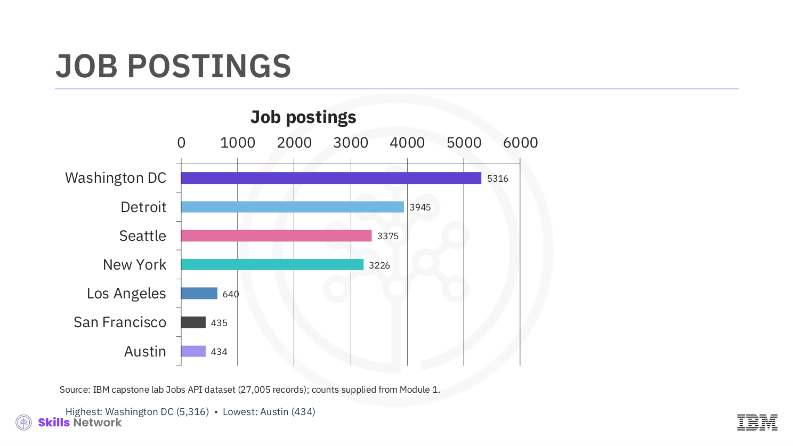
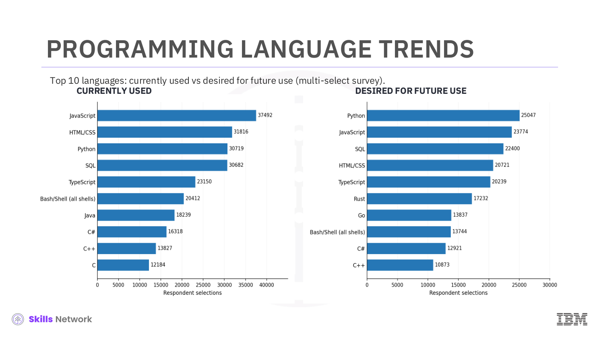
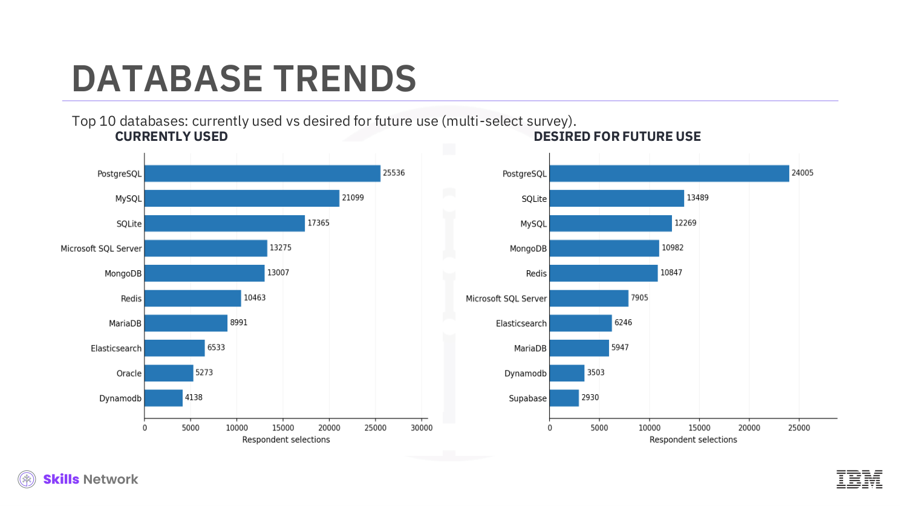
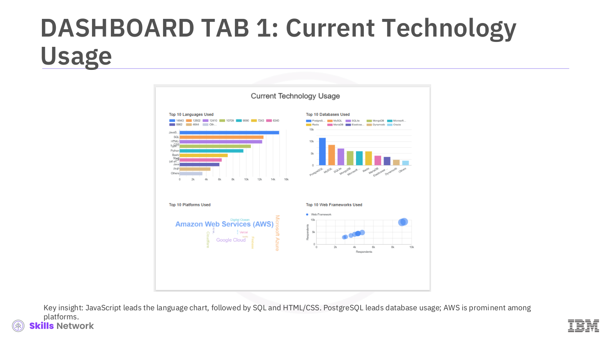
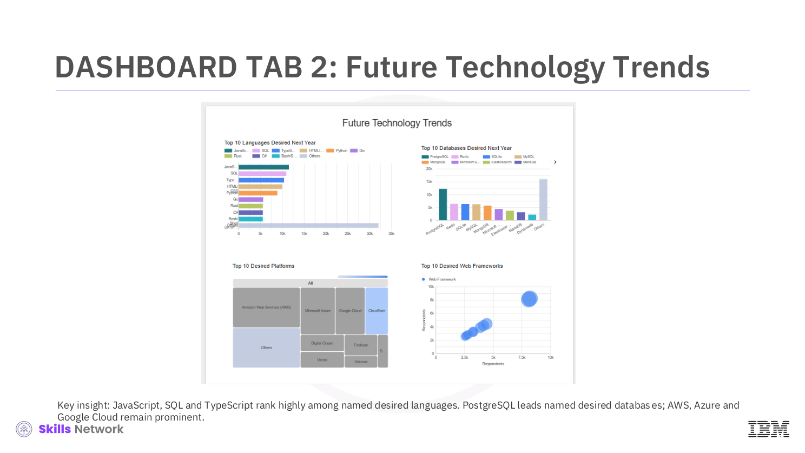
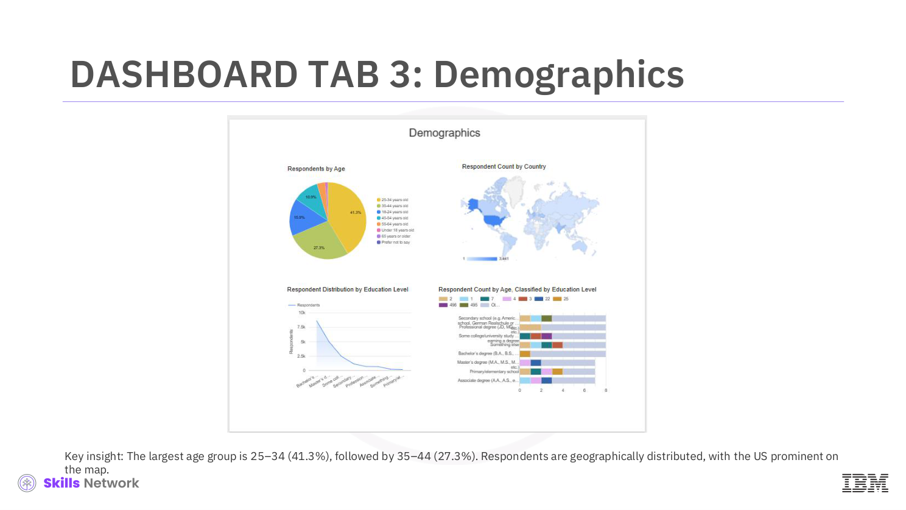

Project overview
Completed as part of the IBM Data Analyst Professional Certificate (14 October 2026). This project investigates currently used and desired developer technologies, historical lab job-posting data, salary information and workforce demographics. Analysis combines course-provided Jobs API data, a programming-language salary sample and the Stack Overflow Developer Survey.
Research questions
- Which programming languages and databases do developers currently use?
- Which technologies do respondents want to work with in the future?
- How do geography and workforce demographics inform interpretation?
- How can these insights support recruitment and technical learning priorities?
Methods & data
Collection: Python requests with the IBM capstone Jobs API; HTML-table scraping using BeautifulSoup.
Preparation: survey exploration and deduplication, splitting semicolon-separated multi-select fields, counting technology mentions, and spreadsheet exports.
Visualisation: charts and three Google Looker Studio dashboard tabs covering present usage, desired technologies and demographics.
Data caveat: these are course and survey datasets, not a live measurement of today's vacancies or salary market. Multi-select preferences and keyword matching limit generalisation.
Key findings
- JavaScript was the leading currently used language in the analysed survey (37,492 selections), while Python led desired-use selections (25,047).
- PostgreSQL led both currently used (25,536) and desired databases (24,005).
- The median reported compensation among respondents with valid values was $65,000; this figure should not be treated as a current market salary estimate.
- Developer demographics and survey selection effects are important when translating results into hiring or training decisions.
Selected visualisations from the report






Full 24-page project report
The full report includes the executive summary, methodology, job-posting analysis, programming language and database trends, dashboard screenshots, limitations and appendices.
View full report (PDF)Download PDFImportant limitations
This showcase is based on the supplied capstone report, not a claim that all underlying datasets or Python notebooks are available to download. Historical training data, survey methodology and incomplete lab outcomes are clearly distinguished from verified reported findings.